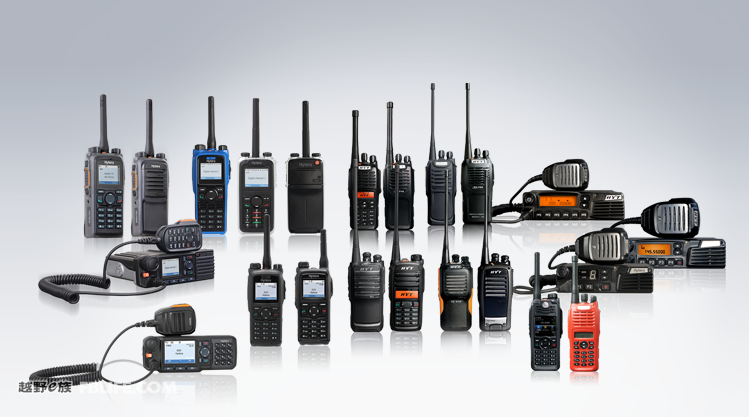
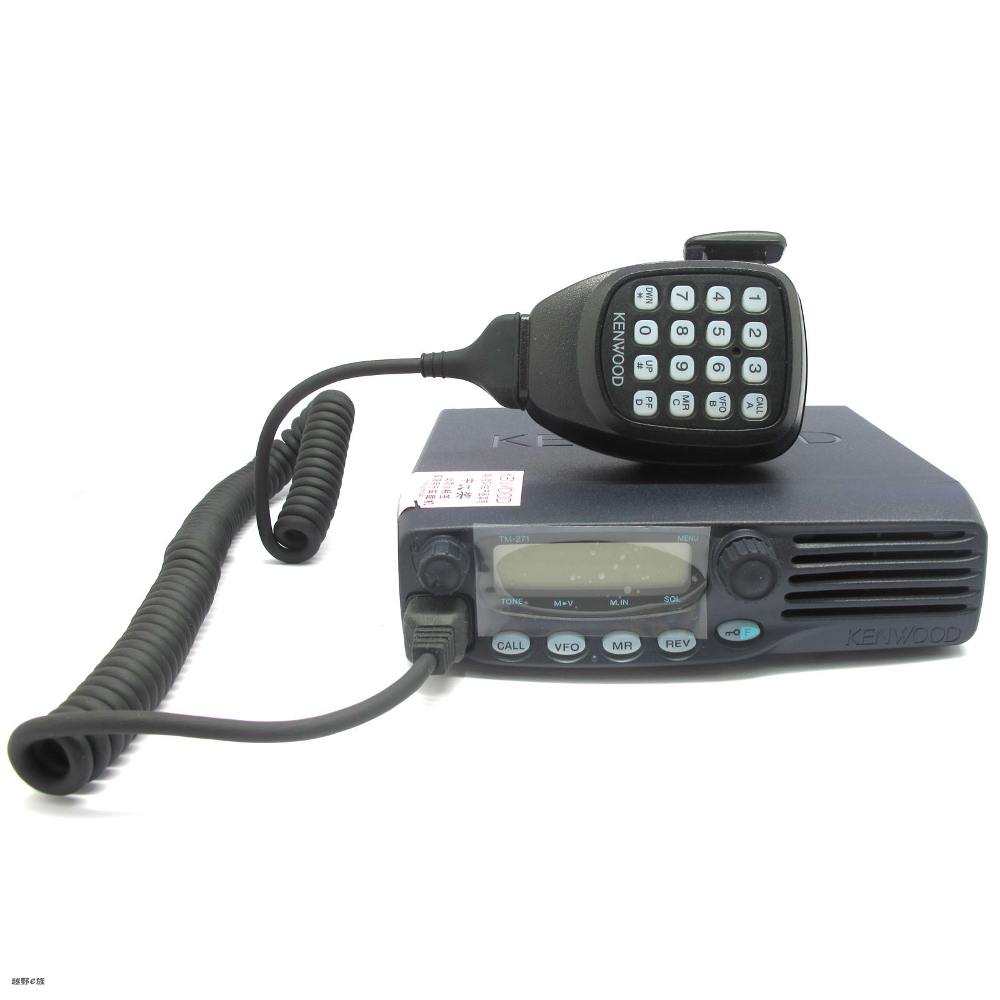
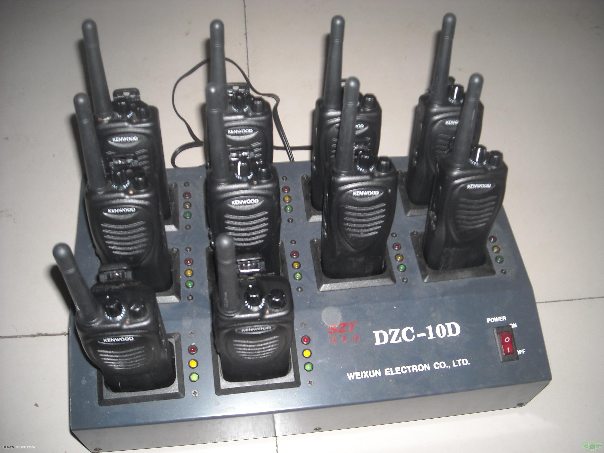
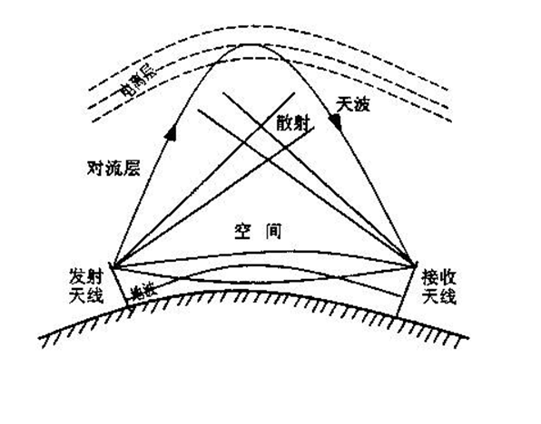
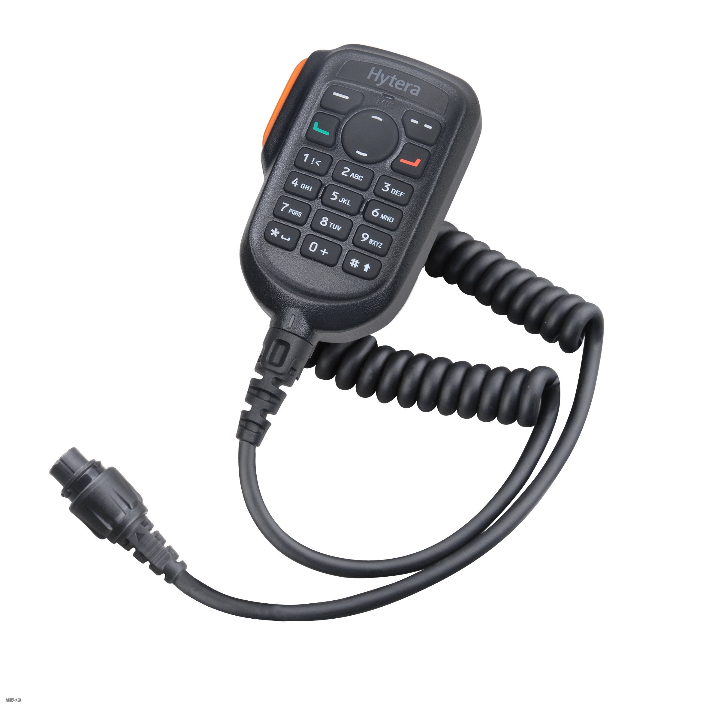
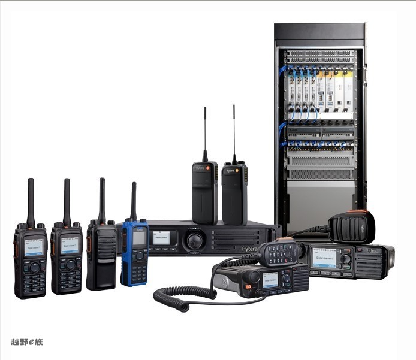

CQ！CQ！英雄会无线电器材使用攻略大全
导读：作为越野活动中最有效最便捷的通讯工具，无线电已经成为一种必不可少的活动随行工具，尤其在英雄会这样的大型活动中。车队长途行驶，无线电通讯可以及时的保持前后车之间有效沟通，最大程度保证车队运行安全；英雄会活动，无线电能保证各个工作组内部和相互通联协调畅通，提高工作效率；对于救援，架设中继后无线电更是能起到关键作用。
越野e族会员中不乏资深火腿HAM，也有不少刚刚接触无线电的初学者，希望下面这篇文章能够帮助您迅速了解和掌握无线电的基本使用技巧。

什么是对讲机：
对讲机的英文名称是 two way radio，它是一种双向移动通信工具，在不需要任何网络支持的情况下，就可以通话，没有话费产生，适用于相对固定且频繁通话的场合。
如何鉴别民用对讲机：
答：凡是有液晶显示屏、数码显示管、对讲上有数字按键的都是民用对讲机。 其频段范围在100-500Mhz之间，都可被新型屏蔽器所屏蔽。

对讲机的频率范围：
在日常对讲机的使用中，根据中国无线电管理委员会规定，对讲机频率一般做如下划分：
专业对讲机：V段136-174MHZ；U段400-470MHZ；
武警公安用：350-390MHZ；
海岸用：220MHZ；
交通信号灯监控、防空警报器：223.025-235Mhz
业余用：433MHZ；
集群用：800MHZ；
手机：900MHZ/180MHZ；
民用：409-410MHZ
越野e族最常用的：438MHZ
根据电磁理论，频率越低，波长越长，电波穿透建筑物的能力越弱，但绕射能力越强；频率越高，波长越短，电波穿透建筑物能力越强，但绕射能力越弱。因此，在城市因为楼房密集度高，需要电波穿透力强，所以频率越高越适合；而在旷野或海面这种空旷的地域使用对讲机，则需要绕射能力强的电波，所以选用V段（136-174MHZ）比较合适。
对讲机的使用方法：
1、当对讲机正在发射时，保持对讲机处于垂直位置，并保持话筒与嘴部2.5-5厘米的距离。发射时，对讲机距离头部或身体至少2.5厘米。如果将手持对讲机携带在身体上，发射时，天线距离人体至少2.5厘米。
2、使用过程中不要进行多次开机关机的动作，同时把音量调整到适合您听觉的音量。
影响对讲机通话距离和效果的因素有以下几个方面：
1、系统参数
（1）发射机输出功率越强，发射信号的覆盖范围越大，通信距离也越远。但发射功率也不能过大，发射功率过大，不仅耗电，影响功放元件寿命，而且干扰性强，影响他人的通话效果，还会产生辐射污染。各国的无线电管理机构对通信设备的发射功率都有明确规定。
（2）通信机的接收灵敏度越高，通信距离就越远。
（3）天线的增益，在天线与机器匹配时，通常情况，天线高度增加，接收或发射能力增强。手持对讲机所用天线一般为螺旋天线，其带宽和增益比其他种类的天线要小，更容易受人体影响。

2、环境因素
环境因素主要有路径、树木的密度、环境的电磁干扰、建筑物、天气情况和地形差别等。这些因素和其他一些参数直接影响信号的场强和覆盖范围。

3、其它影响因素
（1）电池电量不足。当电池电量不足时，通话质量会变差。严重时，会有噪音出现，影响正常通话。
（2）天线匹配。天线的频段和机器频段不一致，天线阻抗不匹配，都会严重影响通话距离。对于使用者来说，在换用对讲机天线时要注意将天线拧紧，另外不能随便使用非厂家提供的天线，也不能使用不符合机器频点的天线。
4、音质的好坏
主要取决于预加重和去加重电路，目前还有较先进的语音处理电路“语音压扩电路和低水平扩张电路的应用”，这对于保真语音有很好的效果。

对讲机功能术语解释
1. 监听（MONITOR）
为接受弱小信号而采用的一种收听方式。通过按专用键强制接通接收信号通道，操作者用耳朵辨别扬声器中的微弱声音，达到收听的目的。
2. 扫描（SCAN）
为了听到所有信道的通话，而采用的一种收听方式。
通过按专用键，使接收电路按一定顺序逐个信道接收一段时间，以收听到信道中的信号。若每个信道接收时间为100ms，则每秒可扫描过十个信道，即扫描速度为10ch/s 。
3. 优先信道扫描功能 (Priority Channel Scan)
在扫描过程中优先扫描所设定的优先信道。
4. 删除/添加扫描信道 (Delete/Add Scan Channel)
将某一信道从扫描列表中删除或添加到扫描列表中。
5. 声控（VOX）
当该功能被激活后，不必按PTT键，可直接通过语音启动发射操作。
6. 发射限时功能 (TOT: Time Out Timer)
该功能用于限制用户在一信道上超时间发射，同时也避免对讲机因长时间发射而造成损坏。
7. 省电功能 (Battery Save)
为节约用电，延长待机时间，对讲机在一段时间内无发射接受和按键操作，将以一段时间关机、一段时间开机的方式工作，这种方式叫省电方式。开关机时间长度比大约是1：4。当收到信号或有按键操作时，对讲机立即退出省电状态，进入正常状态。
8. 高低功率选择功能 (High/Low power)
该功能可让用户根据实际情况选择高功率或低功率。
9. 禁发功能 (Busy Channel Lockout)
当使用该功能时，用户禁止在繁忙信道上发射信号。
10. 静噪级数 (Squelch Level)
接收信号中噪声的强弱与信号的强弱呈对应关系，信号越强噪声越弱。把最大噪声和最小噪声之间分成若干档，每一档称为一级。分成的档数叫静噪级数。用户可根据实际情况进行选择。
11. CTCSS/CDCSS功能
使用该功能可以避免接收不相干的呼叫。
12. 2-TONE/DTMF选呼功能
利用2-TONE或DTMF信令选择呼叫相应的对讲机。
13. 倒频功能 (Reverse Frequency)
使用倒频功能时，对讲机的发射频率和接收频率将互换，并且所设定的信令也进行互换。
14. 脱网功能 (Talk Around)
使用脱网功能时，对讲机的发射频率变得与接收频率相同；发射信令也转成与接收信令相同。
15. 自动应答功能 (Auto-Transpond)
当对讲机收到一个正确编码呼叫时，向呼叫方发出一个信号以响应呼叫。
16. 紧急报警(Emergency Alarm)
按下报警专用键，对讲机以最大声音发出报警声或发出预定报警码给其他的手持机或基台。
17. 巡逻登记(Patrol Record)
巡逻人员到达巡逻点时，对讲机将收到巡逻登记器发出的查询信号，然后自动启动登记操作，把自身的身份码等信息发给巡逻登记器予以登记，表明某巡逻人员已到达该地。
18. 锁键功能 (Keylock)
使用该功能可以防止键的误操作。
19. 电量指示（Battery Indicator）
显示电池电量。
20. 照明功能 (Backlight)
用于在夜间或昏暗的情况下操作，可看清楚LCD显示和按键。
21. 复制功能 (Cloning)
该功能允许将一台对讲机中的数据复制到型号相同的其他对讲机中。
22. 调制
用调制信号的某一种或某几种参数控制载波的参数的改变，按照控制参数的不同，调制又可分为调幅、调频和调相。
23. 音频
Audio,指人说话的声音频率，通常指300Hz-3400Hz的频带。
24. 载波
话音、数字信号、信令等有用信号的载体，易于传输的高频电磁波。
25. 信道和信道间隔
信道指发射接收时占用的频率值。相邻信道之间的频率差值称为信道间隔。规定的信道间隔有25KHz(宽带)、20KHz、12.5KHz(窄带)等。
26. 2-TONE
2-TONE, 两音信令，由两个音频信号组成，A Tone + B Tone。 先发A Tone一段时间，然后间隔一段时间，再发B Tone。利用2-TONE信令可选择呼叫相应的对讲机。
27. 5-TONE
5-TONE, 5 音信令，作用与两音信令相同，区别在于由五种频率组成。
28. CTCSS
CTCSS (Continuous Tone Controlled Squelch System) , 连续语音控制静噪系统，俗称亚音频，是一种将低于音频频率的频率（67Hz-250.3Hz）附加在音频信号中一起传输的技术。因其频率范围在标准音频以下，故称为亚音频。当对讲机对接收信号进行中频解调后，亚音频信号经过滤波、整形，输入到CPU中，与本机设定的CTCSS频率进行比较，从而决定是否开启静音。
29. CDCSS
CDCSS (Continuous Digital Controlled Squelch System)，连续数字控制静噪系统，其作用与CTCSS相同，区别在于它是以数字编码方式来作为静音是否开启的条件。
30. DTMF
DTMF（Dual Tone Multi Frequency），双音多频，由高频群和低频群组成，高低频群各包含4个频率。一个高频信号和一个低频信号叠加组成一个组合信号，代表一个数字。DTMF信令有16个编码。利用DTMF信令可选择呼叫相应的对讲机。
购买对讲机需要考虑的几个因素

不论是艰苦的野外穿越还是休闲的滑雪、骑马等活动，对讲机都是保持团队间联络的最好方式。而野外活动的特殊性，又对我们购机提出了一些特殊的要求，其中需要重点考虑的为：
1、电源
2、频点兼容性
3、可操作性、防水防震
4、功率
(1)、电源的选择
常用的对讲机电源有：锂电充电电池、镍氢充电电池、AA碱电池。在野外一般无法进行充电，所以对讲机的待机时间和通话时间就是一个比较重要的参数，否则往往在最需要进行通讯联络时由于对讲机电量不足而出问题。一般而言，锂电、镍氢为电源的对讲机功率比较大，但是备用电池是个很大的问题；碱电池为电源的对讲机功率一般小于2W，但是背着几十个5号电池上山还是可能的。
(2)、通讯频点
通讯频点和无线电通讯的关系就像是马路和车一样密不可分。现在常见的对讲机主要有两种来源：从国外夹带回来的；国内正规商店购买的民用对讲机。虽然都是在UHF频段进行通讯，但由于国内的无线电频段管理规定和国际标准有别，这两类对讲机的通讯频点也有很大的不同：
还有一点应该注意的是，因为我们每个人出行不是固定的团队，那就势必有不同类型的手台，为了更好的使用，建议大家买个可调式的手台。这样可以大大加强手台的可操作性.
由于对讲机的品牌太对，就不一一列举了，毕竟每个人有每个人的欣赏角度和使用重点。
选用问答
Q：使用对讲机通话，有什么规范吗？
A：在业余段，有非常严格的通联规范，在考执照的时候会专门培训。在免执照409M，有下列规定：
* 不得擅自更改发射频率、加大发射功率（包括额外加装射频功率放大器），不得擅自外接天线或改用其它发射天线；
* 使用时不得对各种合法无线电业务产生有害干扰，一旦发现有害干扰，应立即停止使用，并采取措施消除干扰后方可继续使用；
* 使用公众对讲机，其通信质量不受无线电管理机构保护，应承受其它正常工作的无线电业务可能产生的干扰；
* 禁止在机场和飞行器上使用；
* 禁止与公众电话网、公众移动通信网及其它电信网互联。
Q：我应该买个什么对讲机用于平时徒步、爬山？
A：首先，你应该有至少一台国家免执照对讲机(409MHz，0.5W发射功率，20个频道)，城市内的通联距离大概500米，郊区可以达到一到三公里，用于入门使用。然后，你可以考虑考执照，使用业余段(430-440MHz，磨房/绿野频点也在这个范围)的手台和车台。
Q：能否一步到位买一台兼顾409M和业余段的机型？
A：可以，但不要买那些性能不稳定的品牌或型号。毕竟户外运动对通信的第一要求就是：可靠。另外，这些机型可能不能通过无委会的验机。
Q：0.5W/2W/4W，分别对应多少通话距离呢？
A：决定通联距离的因素很多，高度、天线、地形都比功率更加影响通联距离，所以功率与通话距离并没有一一对应关系。不同品牌的设计、工艺、元件质量，也影响了功率的发挥。
Q：没有执照而使用业余段(比如磨房/绿野频点)，会有什么后果吗？
A：从技术上来说，没有足够的知识而使用业余段，会给他人造成干扰而不自知。从法律上来说，可能被没收设备和罚款，造成严重后果的(完全可能在你自己还不知道的情况下造成的)可处三年以下有期徒刑。如果同时违反国家安全法，那就更严重了。
而且在业余段，如果你没有合法呼号就呼叫，不会有人搭理你，因为有执照的与没执照的通联会被吊销执照。
Q：有一些水货对讲机注明是FRS/GMRS免执照频段，可以在国内使用吗？
A：FRS/GMRS是国外部分地区的免执照频段，但该频段(462-467MHz)在国内早已被划为其它专门的用途。所以你在这个频点上发射，就已经干扰了他人的合法使用了。己所不欲、勿施于人，既然我们不希望别人干扰我们的通讯，我们自己当然也不应该去干扰他人的正常通讯啦。
Q：哑音频是什么？有什么用？
A：在业余段，该功能主要是用于与中继台间的通讯。而在免执照409M，哑音频功能几乎没什么用，如果你的对讲机有该功能，务必把它设置为“0”。不然会出现别人收到你，而你收听不到别人的信号的情况，这对救援来说是非常不利的。该功能原本用于在一个嘈杂的频道中，双方可以约定使用相同的哑音频，这样发射方在讲话时，机器会在无线电波中自动加上一个音频，接受方把有这个约定音频的信号播放出来，而屏蔽没有附加该音频的其它信号。问题是，当你的对讲机没有声音的时候，并不表示这个频道是空闲的，没准别人正在通联，而你由于加了哑音频而听不到，如果你这时发射，就干扰了他人的通讯。所以我们戏称它是一个“自私”的功能。
Q：紧急情况下，如何利用对讲机呼救？
A：业余段应依距离次序呼叫周围300KM以内的中继台、海事SOS频道，然后循规范操作，不再赘述。409M的则应按如下步骤操作：
首先收集一些手机电池备用，以便在对讲机电池用完后有后备电池。改装是非常容易的，只要两条金属线就行了。全队只留两台对讲机在开机状态，其它全部关闭以节约电池。
找两名体力好、思路清晰的队员，携两台对讲机到附近最高点(越高越好，但要注意自身安全)。一台对讲机开在十五频道守听(务必关闭哑音功能!)，另一台从一频道到20频道循环呼叫：“SOS SOS 这里是XX/XXX在某某山紧急呼救这里是XX/XXX在某某山紧急呼救请收到信号的到十五频道回复我请收到信号的到十五频道回复我”，一轮呼叫完毕隔十分钟后再进行下一轮呼叫。如果一小时以后仍旧没有回复，可以考虑移向更高更开阔的位置，移动过程中应保持守听十五频道。在四周无遮挡的山顶，0.5W对讲机的信号，传出去上百公里都是有可能的。
Q：在对讲机收到呼救信号，该怎么处理？
A：按重要性依次为：第一，保证自己和本队的安全；第二，通知全队放弃原计划，以救人为唯一目标；第三，与外界建立联系，把求救信号转发出去，担当求援者与外界的通讯桥梁；第四，在力所能及的情况下，进行救援。其中第三点非常重要，如果尚未把求救信号转发到外界，就不要采取任何行动。
Q：耳机好用吗？VOX功能有用吗？
A：耳机并不适用于肢体幅度大的运动，容易造成耳机脱落而自己还不知道，就耽误联络了。对于需要解放双手的运动，比如公路单车、滑翔伞，可以使用耳机，但一定要养成随时检查耳机的习惯。如果一定要使用耳机，最好让懂电子的朋友对耳机插孔进行改装，使耳机和喇叭可以同时发声，减少因耳机脱落造成听不到呼叫的可能性。
VOX功能可以通过话筒电平判断周围声音的强弱，在你说话的时候自动发射，而不需要用手去按发射按钮。该功能在嘈杂、多人的环境下非常不可靠，造成经常处于发射状态而自己还不知道，一来费电、二来对他人造成打扰。因此，建议不要使用VOX功能。
【商家推荐】：越野e族认证经销商天拓无线电器材